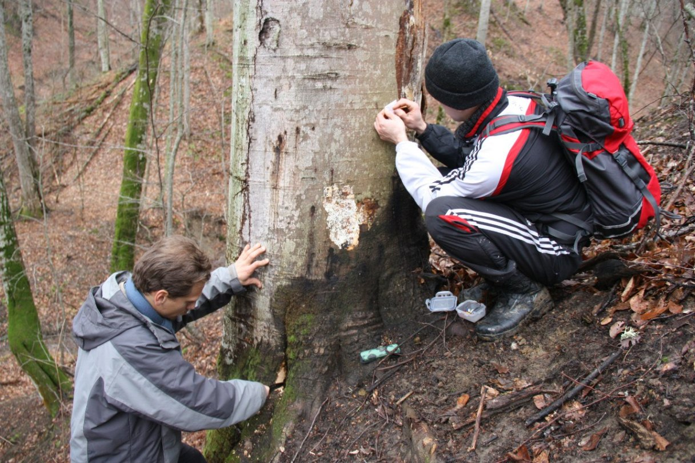
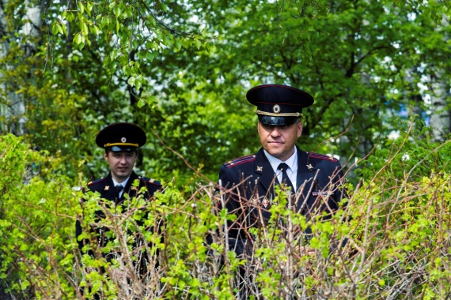
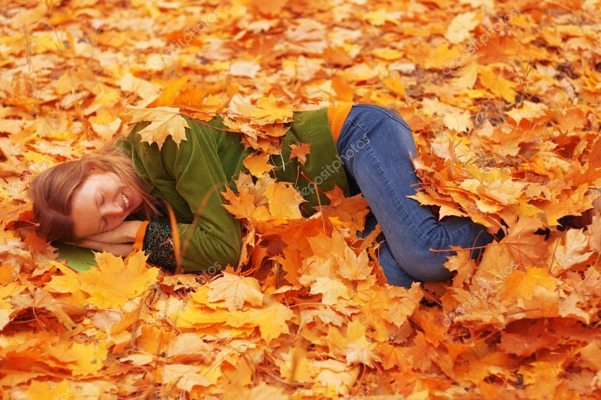

Пока гуляешь можно увидеть массу интересных вещей.
Давайте вместе ппробуем найти все лесные интересности!
Вы готовы к приключению?
При входе в лес на встречают артефакты древней цивилизации
Если в них поковыряться, то можно встретить первого обитателя:
🦛Крысу!🦛
Поздаровавшись с ней, мы идём дальше в глубь.
Наслаждаясь тишиной и спокойствием, мы начинаем замечать какое-то движение.
Пройдя в глубь кустов мы натыкаемся на других представителей нашего леса:
🧔Старички - лесовички!🧔
Пообщавшись с ними мы наполнились:
Пройдя ещё дальше на опушку мы знакомимся с редкими перелётными обитателями наших широт:
🦌Олени - искатели!🦌
Так как после посещения нашего леса они улетают на срок от 5 до 15 лет, нам очень повезло увидеть таких зверей.
Подробней про перелётный режим оленей можно прочитать
ТУТ.
После осторожного общения c оленями, мы выходим на тропинку.
Пройдя по ней мы встречаем очень важных обитателей леса.
Они стоят на страже обстановки и беспристрастно бдят за порядком в округе.
👮Тарищмайоры!👮
Они нам рассказали что сейчас сезон перелётных оленей и надо быть аккуратнее.
Внезапно оказалось, что они тоже любят лесных животных и с охотой ищут оленей и старичков - лесовичков.
Ближе к выходу из леса мы натыкаемся на:
🔬Учёные - зоологи!🔬
Не станим им мешать, они заняты очень важными делами:
Ходят легенды, что лесовички это познавшие дзен зоологи.
На этом наше приключение заканчивается. Сегодня мы увидели много интересностей и довольные идём домой!
Спасибо, что были с нами, ждём вас снова!